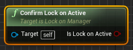
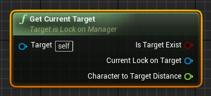
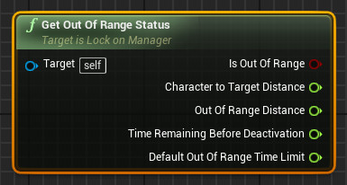
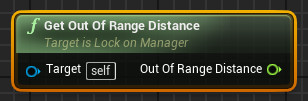
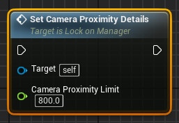
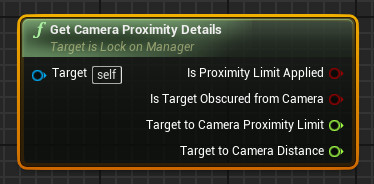
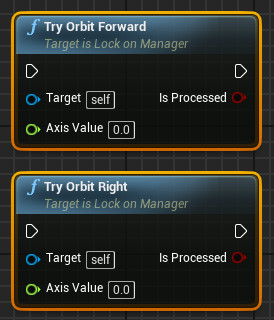
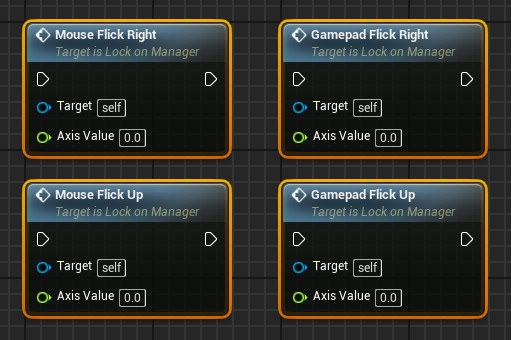

Lock-On 360 - Functions
Confirm Lock-on Active

Output
-
IsLockOnActive
Returns true if the lock on is activated.
Get Current Target

Output
-
IsTargetExist
Returns true if the lock on system is currently focusing on an active target.
-
CurrentLockOnTarget
The current LockOnTarget component that the system is being locked-on to.
-
CharacterToTargetDistance
The distance between the character and the currently active LockOnTarget component.
Get Ouf-of-Range Status

Output
-
IsOutOfRange
Returns true if the currently active target is out of range, false otherwise.
-
CharacterToTargetDistance
The distance between the currently active target and the character.
Distance unit in centimeters.
-
OutOfRangeDistance
The out-of-range distance limit between target and character.
Distance unit in centimeters.If TargetToCharacterDistance is much further than the OutOfRangeDistance, IsOutOfRange returns true.
-
TimeRemainingBeforeDeactivation
The amount of time left before the system automatically deactivate the current lock-on session.
Time unit in seconds.The deactivation will be cancelled if the distance between target and character is restored to below CharacterToTargetDistance before TimeRemainingBeforeDeactivation reaches 0.
-
DefaultOutOfRangeTimeLimit
The time window/delay of how long should a target remains locked on to the system once its distance falls out of range.
Time unit is in seconds.
Get Out-of-range Distance

Output
-
OutOfRangeDistance
The out-of-range distance limit between target and character.
Distance unit in centimeters.If TargetToCharacterDistance is much further than the OutOfRangeDistance, IsOutOfRange returns true.
Set Camera Proximity Details

Input
-
Camera Proximity Limit
This value determines the minimum distance of how close the camera should be towards the target.
The distance unit is in centimeters.The limit will be respected as long as there is no visible obstacle between the target and the camera.
If an obstacle is found, the camera might be placed much closer to the target than the expected proximity limit.
Get Camera Proximity Details

Output
-
IsProximityLimitApplied
Returns true if camera proximity limit is enabled.
-
IstargetObscuredFromCamera
Returns true if there is an obstacle between the target and the expected location of where the camera is supposed to be when proximity limit is enabled.
-
Target to Camera Proximity Limit
The minimum distance of how close the camera should be towards the target.
Distance unit is in centimeters.
-
Target to Camera Distance
The actual distance between the camera and the target.
Distance unit is in centimeters.
Try Orbit Forward/Right

Input
-
AxisValue
Determines the amount of input value given to perform orbit forward/right movement.
If the lock-on system is not active, this function will call its respective Default Move events.
Output
-
IsProcessed
Returns true if AxisValue is not 0, and active lock-on target exists.
Mouse/Gamepad Flick Up/Right

Input
-
AxisValue
Determines the amount of input value is given to perform a flick, will be calculated to check whether a flick is activated or not.
If the lock-on system is not active, this function will call its respective Camera Yaw/Pitch events.